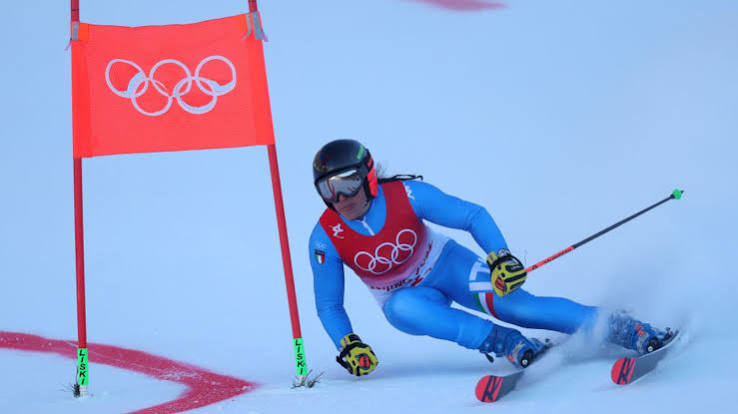
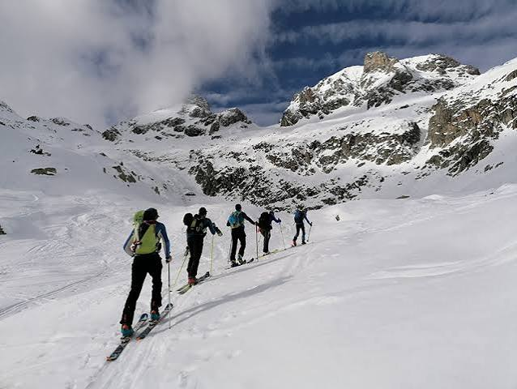
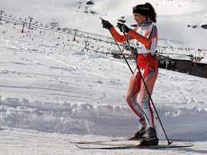

Tres formas de esquiar en Noruega
En Noruega, quedar para ir a esquiar puede significar pasar el día en una estación, subir una montaña o recorrer un bosque por una pista de fondo. Cada plan tiene su propio material y hasta su propia palabra en noruego.
Esquí alpino: una mañana en las pistas
Es la modalidad que conozco por mi trabajo como instructor en Vrådal y Norefjell. En una estación subes en remonte y eliges una pista para bajar. La bota queda sujeta al esquí tanto por la punta como por el talón, lo que ayuda a controlar los giros durante el descenso.

Esquí de montaña: subir antes de bajar
En Noruega oirás la palabra topptur para hablar de una salida a una cumbre. En la subida llevas el talón libre y unas pieles bajo los esquís que te dan agarre sobre la nieve. Para bajar, quitas las pieles y fijas el talón. La subida forma parte de la excursión tanto como el descenso.

Esquí de fondo: recorrer el paisaje
El langrenn es muy popular en Noruega. Los esquís son largos y estrechos, el talón queda libre y avanzas con ayuda de los bastones. Si ves dos surcos paralelos en una pista preparada, son para la técnica clásica. Un recorrido por el bosque puede tener llanos, subidas y pequeñas bajadas.
